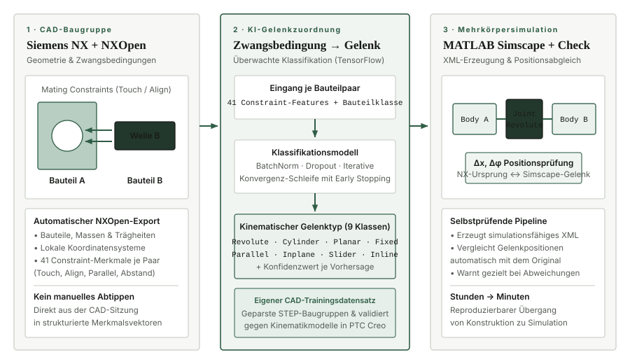
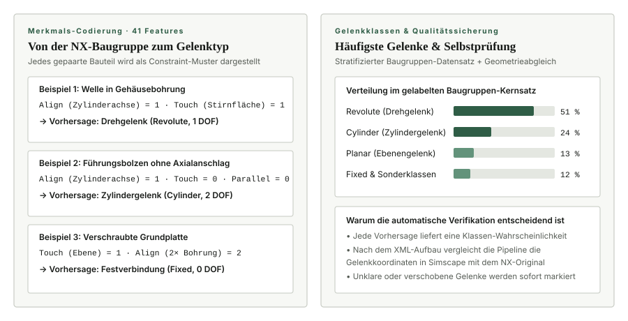

- Kontext
- Lehrstuhl für Konstruktionstechnik (KTmfk), FAU Erlangen-Nürnberg
- Zeitraum
- 04/2025 – 02/2026
- Feld
- CAD-Automatisierung, Mehrkörpersimulation
- Technologien
- TensorFlow, NXOpen API, Siemens NX, PTC Creo, MATLAB Simscape
Von der NX-Baugruppe zum simulationsfähigen Simscape-Modell
Am Lehrstuhl entstehen Mehrkörpersimulationen von Baugruppen. Die Geometrie kommt aus Siemens NX, gerechnet wird in MATLAB Simscape. Der Übergang zwischen beiden war Handarbeit: Bauteile, Zwangsbedingungen und Gelenke wurden manuell übertragen, langsam und fehleranfällig.

Die Pipeline
Sie liest Geometrie und Zwangsbedingungen über die NXOpen API direkt aus der Baugruppe aus und erzeugt daraus simulationsfähiges XML für Simscape. Der Kern ist die Zuordnung: Jede NX-Zwangsbedingung braucht das passende Gelenk.
Zuordnung als Klassifikationsproblem
Diese Zuordnung übernimmt ein Transformer-Modell, formuliert als überwachte Klassifikation auf das passende Gelenk in PTC Creo. Den Trainingsdatensatz habe ich selbst aufgebaut: öffentliche STEP-Dateien geparst und daraus 1.000 Paare aus Zwangsbedingung und Gelenk extrahiert. Validiert wurde gegen reale Modelle in PTC Creo.

Die Pipeline prüft sich selbst
Zum Schluss vergleicht sie die Gelenkpositionen in NX und in Simscape. Weicht etwas ab, gibt es eine Warnung statt eines stillen Fehlers. Das ist der Teil, der den Unterschied macht: ein automatisch erzeugtes Modell, dem niemand traut, spart keine Zeit.
Aus Stunden manueller Übertragung werden Minuten